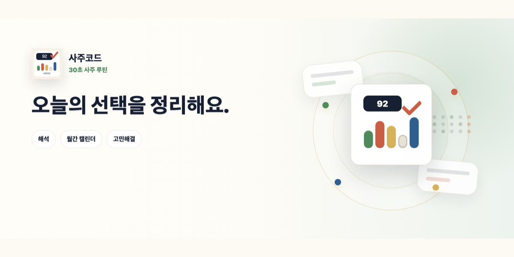
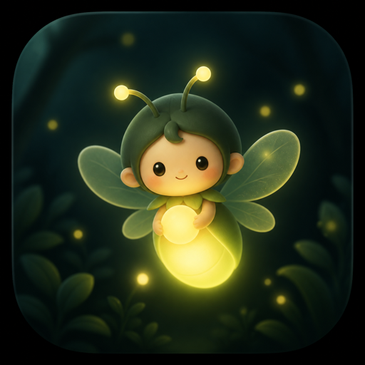
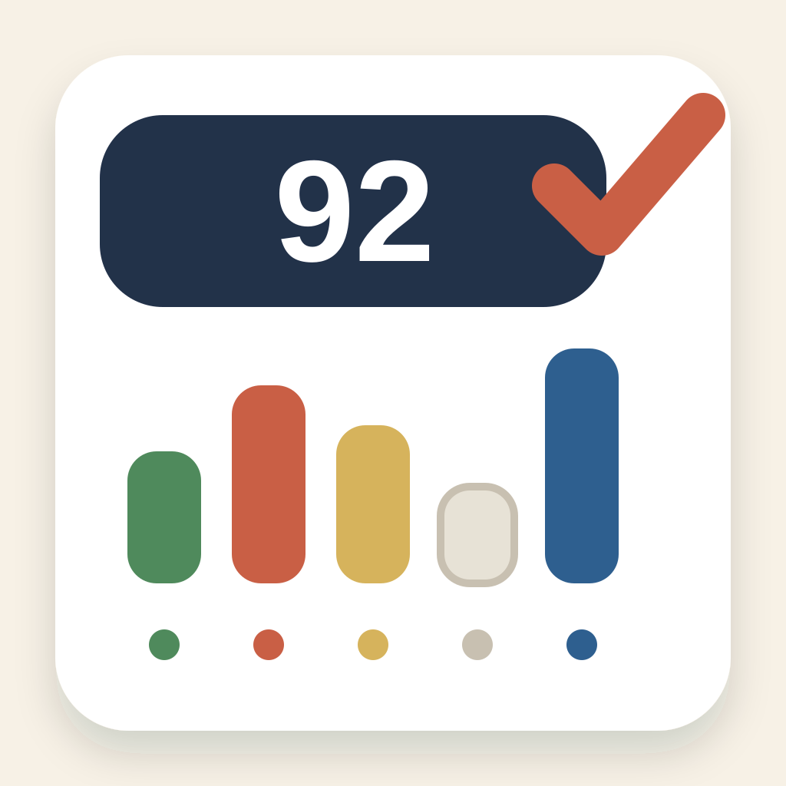

상생
크리에이터, 소상공인, 작은 브랜드가 혼자 감당하기 어려운 기획과 기술을 함께 나눕니다. 좋은 제품은 혼자 빠르게 만드는 것이 아니라 오래 함께 쓸 수 있는 구조에서 나온다고 믿습니다.
오노랩은 보여주기 위한 콘텐츠에서 멈추지 않습니다. 작은 브랜드와 소상공인이 실제로 쓰고, 고객이 다시 찾을 수 있는 화면과 흐름을 함께 설계합니다.
크리에이터, 소상공인, 작은 브랜드가 혼자 감당하기 어려운 기획과 기술을 함께 나눕니다. 좋은 제품은 혼자 빠르게 만드는 것이 아니라 오래 함께 쓸 수 있는 구조에서 나온다고 믿습니다.
콘텐츠, 개발, 운영, 브랜딩을 따로 떼어 보지 않습니다. 현장의 언어를 듣고, 파트너의 강점이 제품 안에서 자연스럽게 보이도록 맞춥니다.
한 번의 납품보다 다음 단계로 이어지는 성장을 우선합니다. 부산에서 시작한 시도가 더 넓은 시장으로 이어질 수 있도록 작은 개선을 계속 쌓습니다.
바다, 거리, 작은 가게, 사람의 취향처럼 흩어진 단서를 모아 콘텐츠와 소프트웨어가 만나는 제품 흐름으로 정리합니다.
현장의 장면과 사용자의 불편을 먼저 봅니다.
콘텐츠, 기능, 운영 기준을 이해하기 쉽게 묶습니다.
웹, 앱, 게임형 인터랙션을 배포 가능한 형태로 만듭니다.
관심이 문의, 방문, 구매, 협업으로 이어지게 만듭니다.
현재 운영하거나 출시 준비 중인 오노랩의 자체 제품입니다.
Local data service
공공 해양 데이터와 현장 제보를 바탕으로 부산 바다의 오늘을 안내합니다.
Daily emotional app
하루 한 번 작은 빛을 열고 짧은 문장을 확인하는 데일리 감성 앱입니다.

Interpretation product
복잡한 사주 정보를 카드와 흐름으로 정리해 읽기 쉽게 보여줍니다.
오노랩은 포트폴리오를 단순히 진열하지 않습니다. 문제를 화면으로 풀고, 브랜드의 이야기를 사용자가 직접 만지는 경험으로 만듭니다.
전체 프로젝트 보기
Daily 반디
App 사주코드오노랩은 지역 브랜드의 이야기와 예약, 방문 흐름이 실제 고객 경험으로 이어지도록 돕습니다.

Hawaiian Restaurant · Gwangalli
하와이의 인사말 Aloha와 맛있다는 뜻의 Ono를 담은 광안리 하와이안 레스토랑입니다. 메뉴 확인과 예약 연결은 오노랩 도메인 안에서 이어집니다.
부산 바다의 조건을 쉽게 읽을 수 있도록 데이터 구조와 폴백 흐름을 만들었습니다.
하루 한 번 열리는 문장, 저장함, 진행도를 차분한 흐름으로 설계했습니다.
정보를 카드와 단계로 나누고, 브랜드 자산과 앱 화면이 같은 톤으로 이어지게 구성했습니다.
브랜드 톤, 숏폼 소재, 페이지 문구, 출시 노트를 제품 맥락에 맞게 정리합니다.
랜딩 페이지, 운영 도구, 앱 화면, 데이터 연동 화면을 배포 가능한 형태로 만듭니다.
게임 루프, 감성형 인터랙션, 진행도와 피드백 흐름을 서비스에 맞게 구현합니다.
브랜드와 창작물이 소개, 탐색, 구매 흐름으로 이어지도록 커머스 접점을 설계합니다.
오노랩은 학생의 커리어 방향과 프로젝트 포트폴리오 점검을 무상으로 돕고 있습니다. 부산의 청년, 크리에이터, 소상공인에게는 교육/채용 사업 경험을 바탕으로 현장에서 바로 쓰이는 기획, 콘텐츠, 디지털 역량을 나눕니다.
문의하기브랜드, 소상공인, 크리에이터, 공공/민간 프로젝트가 함께 성장할 수 있도록 오노랩이 실행 가능한 단위로 나눠 만듭니다.